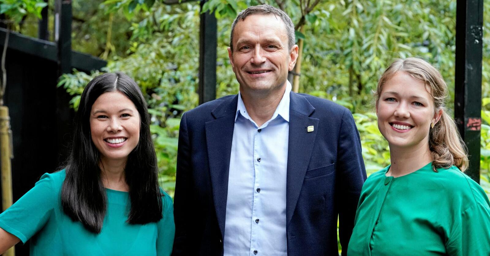

De Grønne vil skape et samfunn hvor vi har gode liv uten at vi ødelegger for andre.
Vår Organisasjon
Miljøpartiet De Grønnes delte ledelse mellom to talspersoner, en av hvert kjønn, er en vanlig ordning i mange grønne partier i Europa. Ordningen er valgt for å bidra til likestilling og maktspredning.
Når de to talspersonene ikke blir enige om beslutninger som må tas raskt, og derfor ikke kan tas videre til sentralstyret, blir beslutningene tatt i arbeidsutvalget.
Partiets medlemmer hører til hvert sitt lokal- eller fylkeslag.
Landsmøte
Landsmøtet er partiets høyeste organ. Landsmøtet holdes minst én gang hvert år og behandler følgende saker: Valg til sentrale tillitsverv, samt regnskap, budsjett og årsmelding for sentrale partiorganer.
Landsstyret
Landsstyret er partiets høyeste organ mellom landsmøtene. Landsstyret består av talspersonene, en representant fra hvert fylkeslag, en representant fra Grønn Ungdom, Grønne Studenter, og Grønt Kvinnenettverks leder.
Sideorganisasjoner
-
Grønn Ungdom er De Grønnes ungdomsorganisasjon.
-
Grønne Studenter er partiets studentorganisasjon.
-
Grønt Kvinnenettverk er partiets kvinnenettverk. Grønt Kvinnenettverks styre og vedtekter vedtas av landsmøtet i Miljøpartiet De Grønne, på samme måte som for partiets øvrige verv og vedtekter.